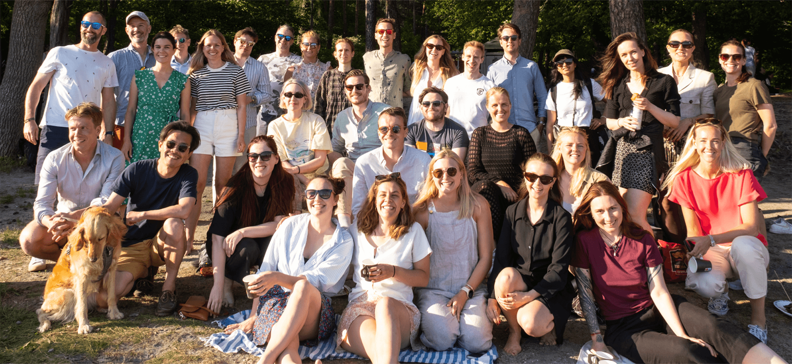
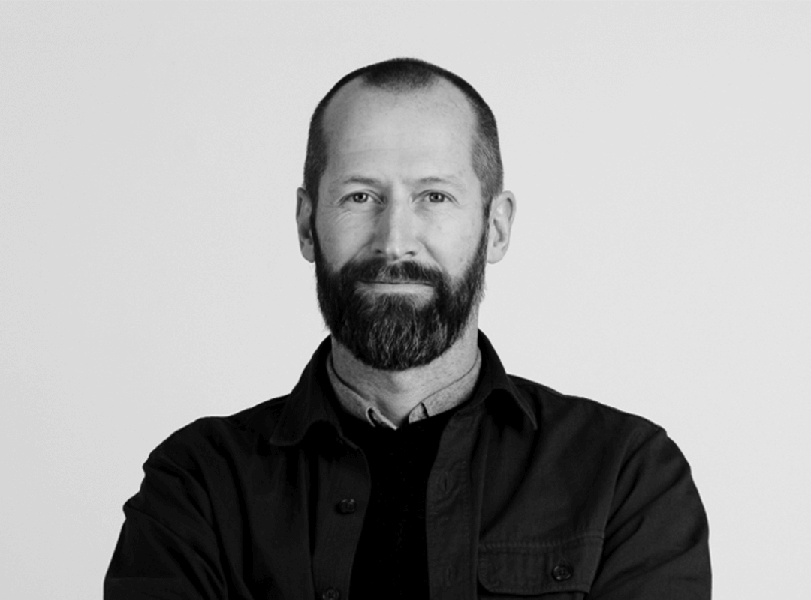
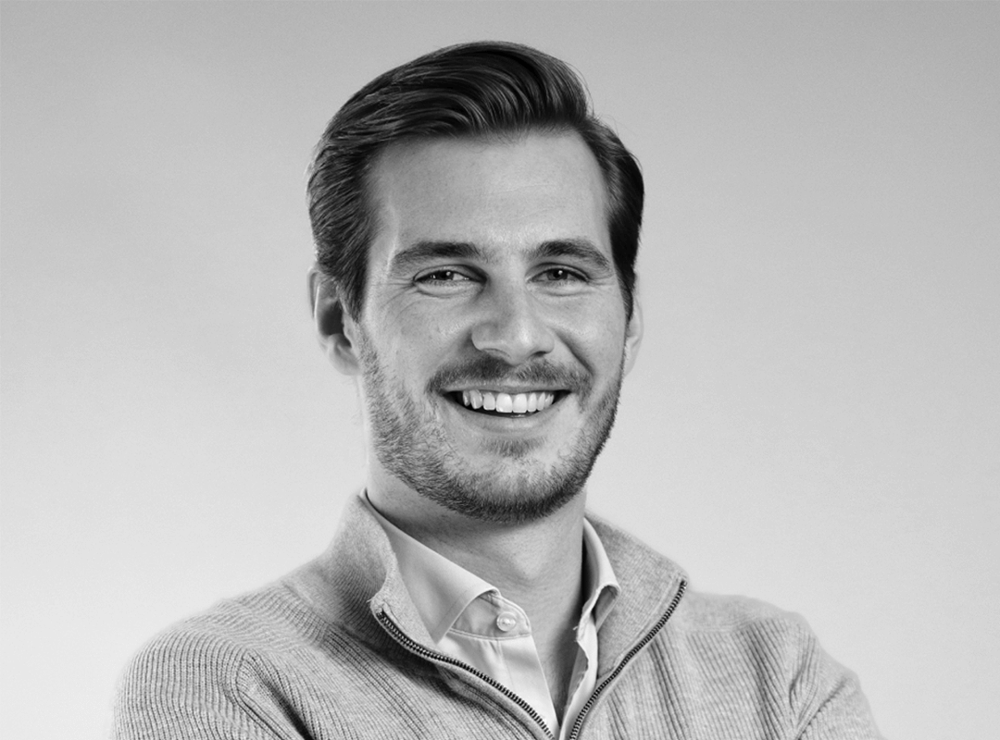

Oslo
Where diverse talents design for all. Together, we build an inclusive future with impact.

Welcome to Oslo
Located a short walk from the city center, our Oslo studio sits nicely between the beach, the forest and the rich cultural scene of Norway’s capital. With an international team of diverse talents, we integrate technology competence and business knowledge to represent the cutting-edge of what a creative studio of the future can be.

“True reinvention happens when cross-functional teams bring their diverse capabilities together, blending creativity from every corner to craft something extraordinary.
In a creative industry undergoing major shifts and challenged by generative AI, this collaborative synergy is more crucial than ever.”
“At frog, we value inclusivity and diversity. We believe in a global mindset, where different cultural ideas can shine.”

“Working at frog is like being in a pond of limitless possibilities, where collaboration, experimentation and creativity jumpstart every project.”
Fun Facts
Global Creatives Team
Our studio brings together a global team of over 13 nationalities. This diverse group offers a range of perspectives for every project, ensuring that our work reflects the rich tapestry of the world we design for. We embrace differences and break down boundaries, recognizing that the best ideas often originate from unexpected sources.
Steering to a Better World
Here at frog Oslo we have a dedicated planet-centric community. Focusing on pure sustainability offers, tools and processes that strive for a positive impact. We bring this mindset to everything we do. We welcome pets to the office, we started growing our own food and for our BBQs, remember to bring your own plate.
A Caffeine-Fueled Community
Our studio of 60 people is fueled by coffee. A communal spirit brings colleagues together as they take turns brewing and sharing fresh pots. From morning to evening, coffee is a shared experience that fosters creativity and connection.


Oslo
Get in touch
Open Roles in Oslo
Customer Transformation
Cookies settings were saved successfully!